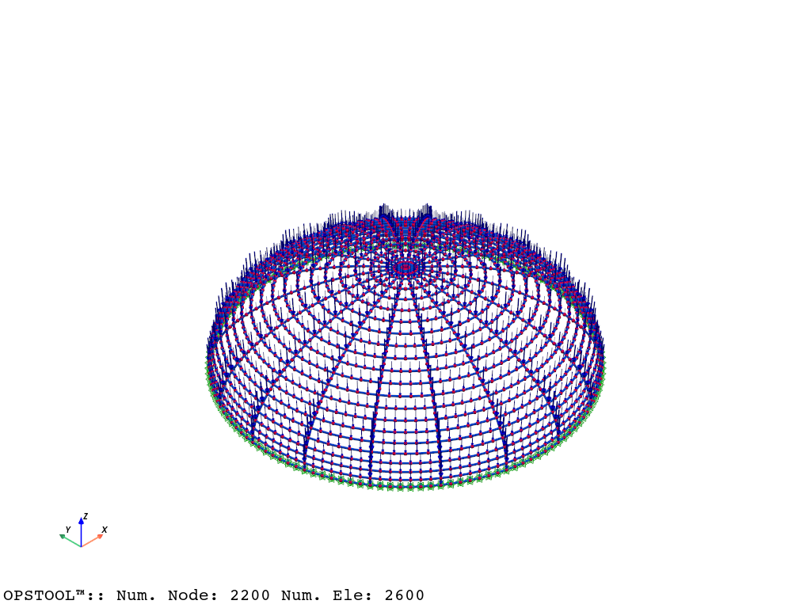
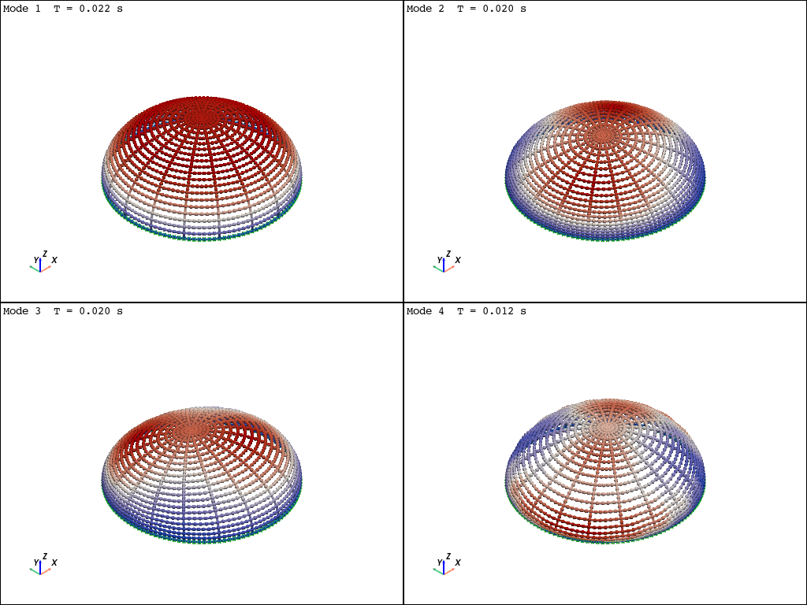
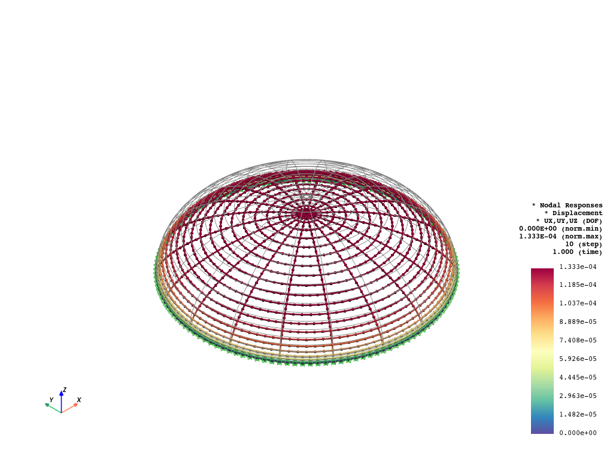

Note
Go to the end to download the full example code.
3D Beam Element Example - A Dome Structure¶
This example demonstrates how to use GMSH to create a 3D dome structure using beam elements. The original example can be found in Elastic 3D beam structures using FEniCSx.
Gmsh model to openseespy¶
import openseespy.opensees as ops
import opstool as opst
ops.wipe()
ops.model("basic", "-ndm", 3, "-ndf", 6)
Read mesh file¶
GMSH_MODEL = opst.pre.Gmsh2OPS(ndm=3, ndf=6)
GMSH_MODEL.read_gmsh_file("utils/dome.msh")
# GMSH_MODEL.get_physical_groups()
# GMSH_MODEL.get_dim_entity_tags()
# GMSH_MODEL.get_node_tags()
Info:: 2 Physical Names.
Info:: 2200 Nodes; MaxNodeTag 2200; MinNodeTag 1.
Info:: 3020 Elements; MaxEleTag 3020; MinEleTag 1.
Info:: Geometry Information >>>
1640 Entities: 420 Point; 820 Curves; 400 Surfaces; 0 Volumes.
Info:: Physical Groups Information >>>
2 Physical Groups.
Physical Group names: ['AllLines', 'FixLines']
Info:: Mesh Information >>>
2200 Nodes; MaxNodeTag 2200; MinNodeTag 1.
2600 Elements; MaxEleTag 3020; MinEleTag 421.
create nodes¶
# Create nodes
node_tags = GMSH_MODEL.create_node_cmds()
Create Fixed nodes
fix_tags = GMSH_MODEL.get_boundary_dim_tags(physical_group_names=["FixLines"], include_self=True)
fix_node_tags = GMSH_MODEL.get_node_tags(dim_entity_tags=fix_tags)
for ntag in fix_node_tags:
ops.fix(ntag, 1, 1, 1, 1, 1, 1)
Creating Elastic Beam-Column Elements¶
thick = 0.3
width = thick / 3
E = 70e3
nu = 0.3
G = E / 2 / (1 + nu)
rho = 2.7e-3
A = thick * width
Iy = E * width * thick**3 / 12
Iz = E * width**3 * thick / 12
J = 0.26 * thick * width**3
kappa = 5.0 / 6.0
# element elasticBeamColumn $eleTag $iNode $jNode $A $E $G $J $Iy $Iz $transfTag
transfTag = 1
ops.geomTransf("Linear", transfTag, 0, 0, 1)
beam_args = [A, E, G, J, Iy, Iz, transfTag]
ele_tags = GMSH_MODEL.create_element_cmds(
ops_ele_type="elasticBeamColumn",
ops_ele_args=beam_args,
physical_group_names=["AllLines"],
)
Model Mass¶
Managing model mass with class opst.pre.ModelMass()
g = 9.81
MODEL_MASS = opst.pre.ModelMass()
MODEL_MASS.add_mass_from_line(ele_tags=ele_tags, rho=rho, area=A)
MODEL_MASS.generate_ops_node_mass()
ops.timeSeries("Linear", 1)
ops.pattern("Plain", 1, 1)
MODEL_MASS.generate_ops_gravity_load(direction="z", factor=-g)
Model Geometry Visualization¶
opst.vis.pyvista.set_plot_props(point_size=5, line_width=3)
opst.vis.pyvista.plot_model(show_nodal_loads=True).show()

Eigenvalue results visualization¶
fig = opst.vis.pyvista.plot_eigen(mode_tags=[1, 4], subplots=True)
fig.show()

OPSTOOL :: Eigen data has been saved to G:\opstool\docs\.opstool.output/EigenData-Auto.nc!
Gravity analysis and postprocessing¶
ops.wipeAnalysis()
ops.constraints("Transformation")
ops.numberer("RCM")
ops.system("BandGeneral")
ops.test("NormDispIncr", 1.0e-6, 6)
ops.algorithm("Newton")
ops.integrator("LoadControl", 0.1)
ops.analysis("Static")
ODB = opst.post.CreateODB(odb_tag="static")
for _ in range(10):
ops.analyze(1)
ODB.fetch_response_step()
ODB.save_response()
OPSTOOL :: All responses data with _odb_tag = static saved in G:\opstool\docs\.opstool.output/RespStepData-static.nc!
For post-processing please see Frame element Response
beam_resp = opst.post.get_element_responses(odb_tag="static", ele_type="Frame")
print(beam_resp)
OPSTOOL :: Loading Frame response data from G:\opstool\docs\.opstool.output/RespStepData-static.nc ...
<xarray.Dataset> Size: 16MB
Dimensions: (time: 11, eleTags: 2600, localDofs: 12, basicDofs: 6,
secPoints: 7, secDofs: 6, locs: 4)
Coordinates:
* time (time) float32 44B 0.0 0.1 0.2 0.3 ... 0.7 0.8 0.9 1.0
* eleTags (eleTags) int32 10kB 421 422 423 424 ... 3018 3019 3020
* localDofs (localDofs) <U3 144B 'FX1' 'FY1' 'FZ1' ... 'MY2' 'MZ2'
* basicDofs (basicDofs) <U3 72B 'N' 'MZ1' 'MZ2' 'MY1' 'MY2' 'T'
* secPoints (secPoints) int32 28B 1 2 3 4 5 6 7
* secDofs (secDofs) <U2 48B 'N' 'MZ' 'VY' 'MY' 'VZ' 'T'
* locs (locs) <U5 80B 'alpha' 'X' 'Y' 'Z'
Data variables:
localForces (time, eleTags, localDofs) float32 1MB -0.0 ... 8.28...
basicForces (time, eleTags, basicDofs) float32 686kB 0.0 ... 1.4...
basicDeformations (time, eleTags, basicDofs) float32 686kB 0.0 ... 6.8...
plasticDeformation (time, eleTags, basicDofs) float32 686kB 0.0 ... 0.0
sectionForces (time, eleTags, secPoints, secDofs) float32 5MB -0.0...
sectionDeformations (time, eleTags, secPoints, secDofs) float32 5MB 0.0 ...
sectionLocs (time, eleTags, secPoints, locs) float32 3MB 0.0 ......
Attributes:
localDofs: local coord system dofs at end 1 and end 2
basicDofs: basic coord system dofs at end 1 and end 2
secPoints: section points No.
secDofs: section forces and deformations Dofs. Note that the section D...
Notes: Note that the deformations are displacements and rotations in...
Visualization of nodal displacements
fig = opst.vis.pyvista.plot_nodal_responses(odb_tag="static", resp_type="disp", show_undeformed=True, defo_scale="auto")
fig.show()

OPSTOOL :: Loading response data from G:\opstool\docs\.opstool.output/RespStepData-static.nc ...
GMSH model finalization¶
import gmsh
import numpy as np
#
# Initialize gmsh
gmsh.initialize()
gmsh.model.add("dome")
# Parameters
N = 20
h = 10
a = 20
M = 20
d = 1.0 # mesh size
# Creating points and lines
p0 = gmsh.model.occ.addPoint(a, 0, 0, d)
lines = []
for i in range(1, N + 1):
p1 = gmsh.model.occ.addPoint(
a * np.cos(0.99 * i / N * np.pi / 2.0),
0,
h * np.sin(i / N * np.pi / 2.0),
d,
)
ll = gmsh.model.occ.addLine(p0, p1)
lines.append(ll)
p0 = p1
in_lines = [(1, line) for line in lines]
# Extruding lines
for j in range(1, M + 1):
out = gmsh.model.occ.revolve(
in_lines,
0,
0,
0,
0,
0,
1,
angle=2 * np.pi / M,
)
in_lines = out[::4]
# Coherence (remove duplicate entities and ensure topological consistency)
# gmsh.model.occ.dilate(entities, 0.0, 0.0, 0.0, 1, 0.1, 1)
# gmsh.model.occ.synchronize()
# Save the mesh
gmsh.model.occ.remove_all_duplicates()
gmsh.model.occ.synchronize()
# Physical groups --lines
line_entities = gmsh.model.occ.getEntities(dim=1)
fixed_lines, all_lines = [], []
for entity in line_entities:
line_tag = entity[1]
all_lines.append(line_tag)
node_tags = gmsh.model.getBoundary([entity], oriented=False)
node_coords = [gmsh.model.getValue(dim=0, tag=node[1], parametricCoord=[]) for node in node_tags]
z_coords = [coord[2] for coord in node_coords]
if all(z == 0 for z in z_coords):
fixed_lines.append(line_tag)
gmsh.model.addPhysicalGroup(1, fixed_lines, 2, "FixLines")
gmsh.model.addPhysicalGroup(1, all_lines, 1, "AllLines")
# We can then generate a 2D mesh...
gmsh.option.setNumber("Mesh.SaveAll", 1)
gmsh.model.mesh.generate(1)
gmsh.write("utils/dome.msh")
# gmsh.fltk.run() # Uncomment to visualize the mesh
# Finalize gmsh
gmsh.finalize()
Total running time of the script: (0 minutes 16.039 seconds)